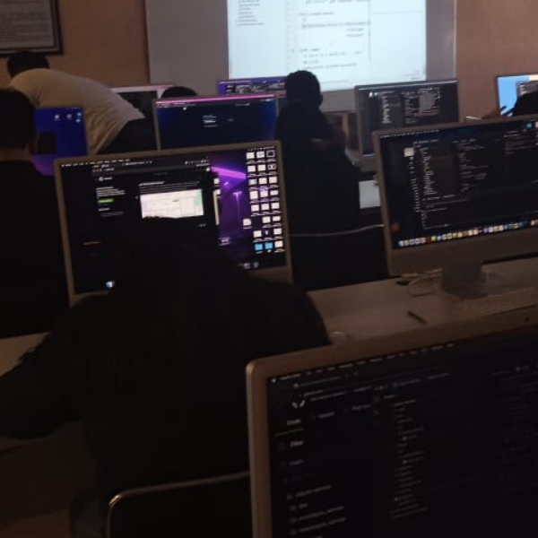
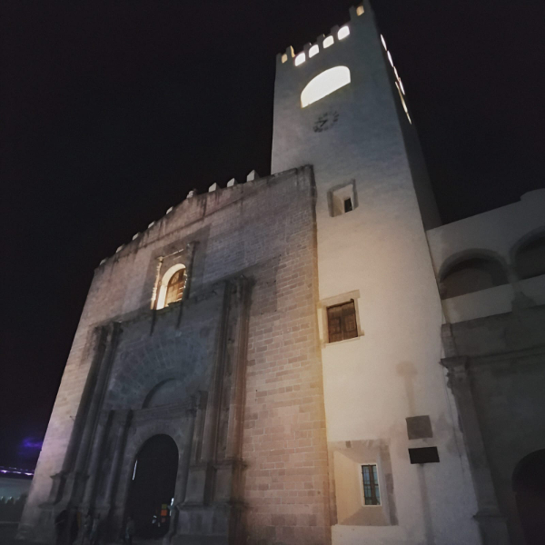
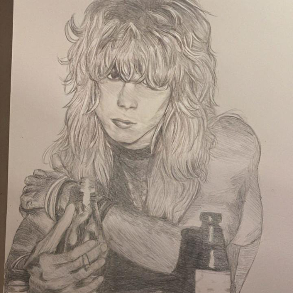
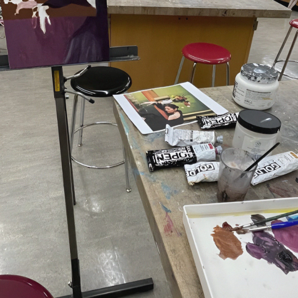

¿Quien soy?
Soy Dulce Karen Gonzalez Yañez, estudiante universitaria de primer semestre del ITSOEH, estoy cursando la carrera de ingenieria en TIC´s. Yo soy una persona comprometida, decidida y perseverante. A pesar de los obstáculos, persevero y aprendo de los fracasos. Además, me esfuerzo por ser una persona recíproca, reconociendo la importancia de dar y recibir de manera equitativa en mis relaciones sociales y familiares. Mi compromiso conmigo misma y con los demás me impulsa a seguir creciendo y alcanzar mis objetivos.

¿Por qué estudio TIC´s?
Durante mi bachillerato, cursé la carrera de técnico en Soporte y Mantenimiento de Equipos de Cómputo y nos proporcionaron un curso el cual me dejó intrigada así que realizé investigaciones respecto al tema y despertó mi interés en esta carrera porque quiero especializarme en ciberseguridad. Quiero convertirme en un profesional altamente capacitado y contribuir a la protección de sistemas y datos. Quiero marcar la diferencia y ser parte de la solución protegiendo la información, la privacidad de las personas y de las organizaciones.
¿De donde vengo?
Soy ciudadana del Estado de Hidalgo, perteneciente a Ciudad de México sin embargo actualmente vivo en Actopan Hidalgo. Este municipio se encuentra en la región central del estado, aproximadamente a 90 kilómetros al norte de la ciudad de Pachuca tiene un entorno natural hermoso y una economía basada en la agricultura y el turismo. Es un lugar lleno de encanto y tradición con gran patrimonio cultural y belleza natural.
Mis pasatiempos
- 1.- Tocar guitarra.
- 2.- Dibujar.
- 3.- Pintar.
- 4.- Cocinar.
- 5.- Ciclismo con amigos.
 
- Aprender a: Tocar rumba flamenca en guitarra
- Conocer: Curso completo para aprender GITHUB
- Entretenimiento: Contenido de Farid Dieck
- Escuchar a: Dmitri Shostakovich